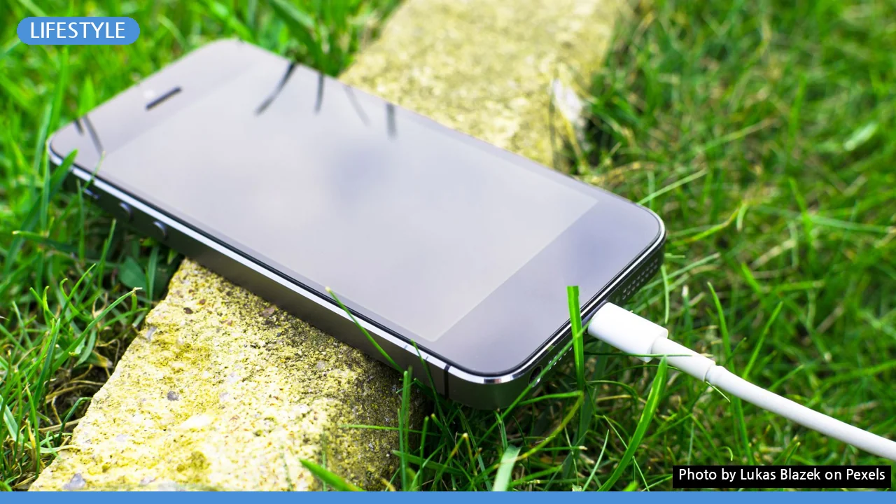
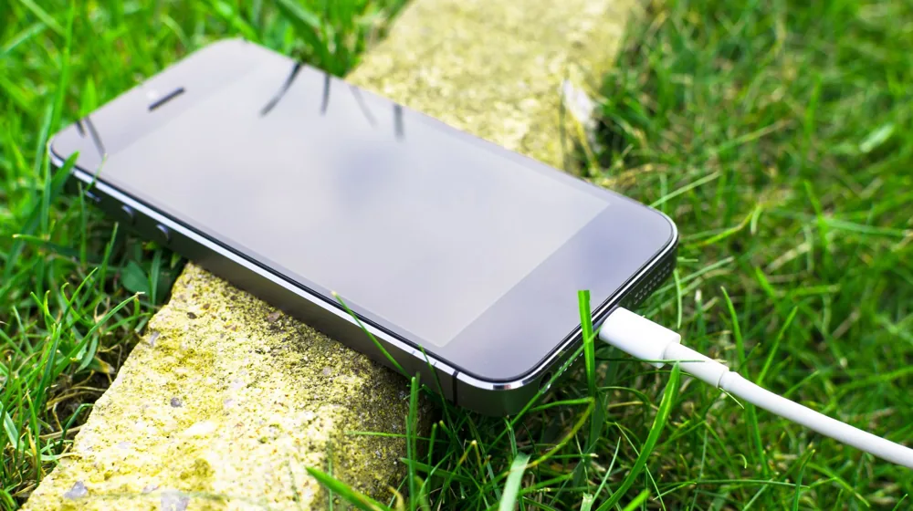

스마트폰 중독 탈출, 지금 시작해도 늦지 않은 디지털 디톡스 가이드
사진: Lukas Blazek / Pexels (무료 이미지, 출처 표기)
온종일 스마트폰을 손에서 놓지 못하고, SNS 피드를 끊임없이 새로고침하고 계신가요? 디지털 기기 의존도가 높아지면서 집중력 저하, 수면 장애, 무기력감을 느끼는 분들이 많습니다. 디지털 디톡스는 이러한 현대인의 고민을 해결하고, 건강한 일상을 되찾기 위한 효과적인 방법입니다.
지금 바로 시작해도 늦지 않습니다. 이 가이드를 통해 나의 디지털 사용 습관을 객관적으로 점검하고, 생활 속에서 실천할 수 있는 현실적인 디톡스 전략을 함께 찾아보세요. 당신의 삶이 한층 더 풍요로워질 기회가 될 것입니다.
디지털 디톡스, 왜 필요할까요?

디지털 디톡스는 스마트폰, 컴퓨터 등 디지털 기기 사용을 의도적으로 줄여 심리적, 신체적 건강을 회복하는 활동을 의미합니다. 단순히 기기 사용을 중단하는 것을 넘어, 온라인에 갇혀 있던 시간을 나 자신과 주변 세계에 다시 연결하는 과정입니다.
과도한 디지털 기기 사용은 뇌를 지속적으로 자극하여 집중력을 떨어뜨리고, 수면의 질을 저해할 수 있습니다. 또한, 타인의 삶과 비교하며 상대적 박탈감을 느끼게 하거나, 만성적인 피로감을 유발하기도 합니다. 디톡스를 통해 이러한 악순환을 끊어낼 수 있습니다.
나의 디지털 사용 습관 점검하기
디지털 디톡스를 시작하기 전, 현재 나의 디지털 사용 습관을 객관적으로 파악하는 것이 중요합니다. 아래 질문들을 통해 자신의 패턴을 점검하고, 어떤 부분에서 변화가 필요한지 확인해 보세요.
- 아침에 눈을 뜨자마자 스마트폰을 확인하나요?
- 식사 중에도 스마트폰을 보거나 SNS를 이용하나요?
- 특별한 목적 없이 습관적으로 앱을 실행하나요?
- 스마트폰이 없으면 불안하거나 초조함을 느끼나요?
- 밤늦게까지 스마트폰을 사용해 수면을 방해받나요?
- 디지털 기기 사용 때문에 중요한 일을 미루거나 방해받은 경험이 있나요?
이 질문 중 3개 이상에 해당한다면, 디지털 디톡스가 필요한 신호일 수 있습니다. 자신이 얼마나 기기에 의존하고 있는지 인식하는 것이 첫걸음입니다.
성공적인 디지털 디톡스를 위한 구체적인 방법
디지털 디톡스는 생활 습관의 변화를 요구하지만, 생각보다 어렵지 않습니다. 일상에서 적용할 수 있는 구체적인 방법들을 소개합니다. 작은 변화들이 모여 큰 효과를 만듭니다.
- 알림 설정 최소화: 불필요한 앱 알림을 모두 끄고, 꼭 필요한 알림만 남겨둡니다. 시도 때도 없이 울리는 알림은 집중을 방해하고 습관적인 기기 확인으로 이어집니다.
- 디지털 기기 없는 시간 설정: 하루 중 특정 시간대(예: 식사 시간, 잠들기 1시간 전)에는 스마트폰이나 태블릿 사용을 금지합니다. 침실은 디지털 기기 프리존으로 선언하는 것이 수면의 질 향상에 도움이 됩니다.
- 자주 사용하는 앱 제한: 스마트폰의 사용 시간 관리 기능을 활용하여 특정 앱 사용 시간을 제한합니다. 또는 앱 아이콘을 보기 어려운 폴더에 숨겨 접근성을 낮추는 것도 좋은 방법입니다.
- 대체 활동 찾기: 디지털 기기 사용 대신 즐길 수 있는 오프라인 활동을 미리 계획합니다. 독서, 운동, 산책, 취미 생활, 친구나 가족과의 대화 등은 디지털 공백을 채워줄 긍정적인 대안이 됩니다.
이러한 방법들을 통해 디지털 기기를 의식적으로 제어하고, 자신의 시간을 더욱 주도적으로 활용할 수 있습니다.
초보자를 위한 디지털 디톡스 단계별 실천법
디지털 디톡스가 처음이라면, 무리하게 시작하기보다 작은 목표부터 설정하고 점진적으로 확대하는 것이 좋습니다. 다음 단계별 가이드를 따라 실천해 보세요.
- 1단계: 하루 1시간 스크린 프리 타임 설정하기 (1주차): 매일 정해진 시간 동안은 스마트폰, 컴퓨터, TV 등 모든 스크린에서 벗어나 보세요. 예를 들어, 퇴근 후 저녁 식사 시간이나 잠들기 전 1시간을 활용하는 것입니다.
- 2단계: 특정 요일 '디지털 휴식의 날' 지정하기 (2~3주차): 주말 중 하루를 정해 최소 4시간 이상 디지털 기기 없이 생활해 봅니다. 이 시간에는 아날로그 취미나 야외 활동에 집중해 보세요.
- 3단계: 앱 삭제 및 재배치 (4주차): 지난 한 달간 사용하지 않은 앱이나 불필요하다고 판단되는 앱을 과감하게 삭제합니다. 자주 확인하는 SNS 앱은 홈 화면에서 보이지 않는 폴더로 옮겨둡니다.
- 4단계: 수면 환경 개선 (지속): 취침 1시간 전부터는 모든 디지털 기기를 멀리하고, 침대 옆에는 충전하지 않습니다. 물리적으로 기기를 멀리 두는 것이 유혹을 줄이는 효과적인 방법입니다.
각 단계마다 자신의 변화를 기록하고, 어려움을 느낀다면 목표를 조금 더 유연하게 조정하는 것도 중요합니다. 중요한 것은 꾸준함입니다.
디지털 디톡스 효과를 높이는 습관 및 주의사항
디지털 디톡스는 단순히 기기를 사용하지 않는 것을 넘어, 디지털을 더 현명하게 사용하는 습관을 만드는 과정입니다. 다음 사항들을 유의하며 디톡스 효과를 극대화해 보세요.
디지털 디톡스는 자기 관리의 한 형태로, 자신에게 맞는 방법을 찾아 지속 가능한 습관으로 만드는 것이 핵심입니다. 2026년 08월 기준, 디지털 사용 환경은 끊임없이 변화하므로, 항상 유연하게 접근하고 본인에게 가장 적합한 방식을 찾아가는 것이 중요합니다. 이 가이드를 통해 더 건강하고 균형 잡힌 디지털 라이프를 만들어가시길 바랍니다.
🔗 이 글도 함께 보면 좋아요: 한방 스파 vs 일반 스파, 나에게 맞는 힐링법은? 핵심 차이와 선택 가이드